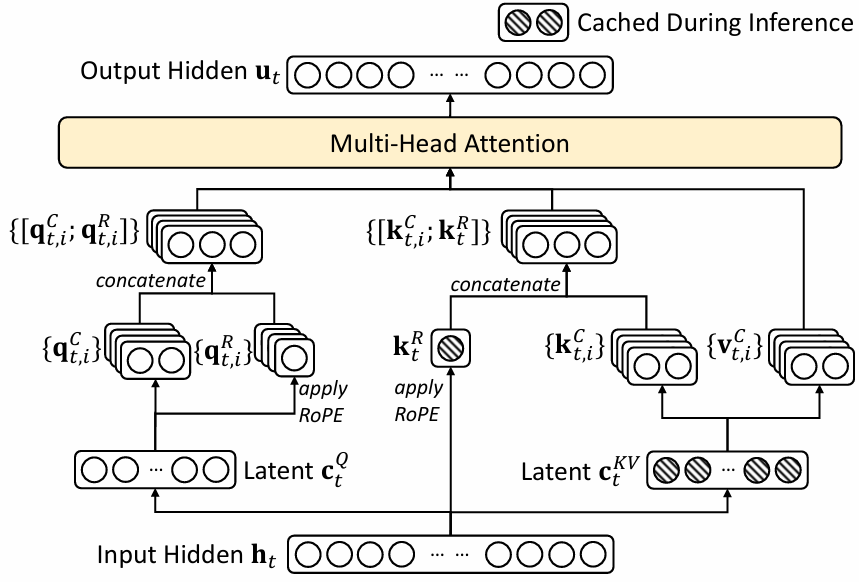
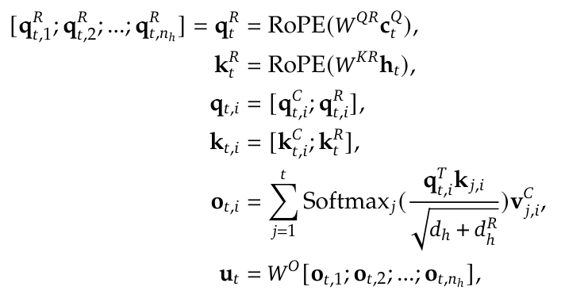
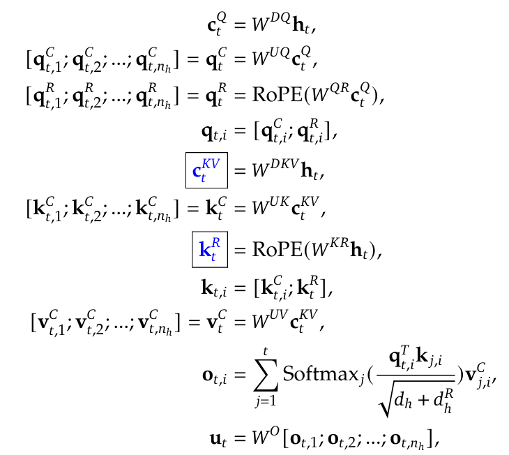
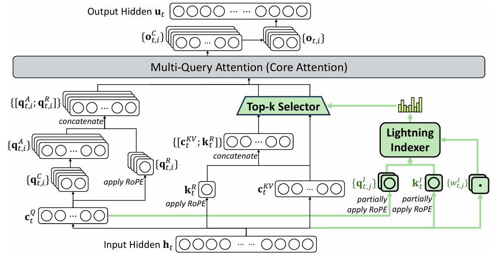

要点
- 利用low rank projection压缩KV cache容量，空间复杂度常数变为原来的nhdhdc
- 通过q与k拼接RoPE编码，使得在利用了low rank projection的同时也能高效进行位置编码
- FFN方面采用了DeepSeekMoE架构：shared experts + routed experts等
- v3.2在MLE上增加DSA稀疏算法，在token level进行topk选取
框架
MLE attention layer(DSv2)

Compression
- KV压缩 Low-Rank Key-Value Joint Compression
- ctKV=WDKVht，其中DKV表示down projection of KV,
dim(ct)=dc,dim(ht)=d
- ktC=WUKctKV，其中UK表示up projection of K,
- vtC=WUVctKV，其中UV表示up projection of V，
dim(ktC)=dim(vtC)=dhnh，切分为nh块后用于MHA
压缩：dc<<dhnh，KV cache只需要存ctKV即可
- low-rank compression for the queries
- ctQ=WDQht，其中DQ表示down projection of Q
dim(ct)=dc′,dim(ht)=d
- qtC=WUQctQ，其中UQ表示up projection of Q
dim(qtC)=dhnh
- note: 后面注意力层这里用的是MHA，其实也可以是GQA甚至MQA，只需要调整up projection矩阵的输出维度就可以了
- note：在推理的过程中，kt=WKWUKctKV, vt=WVWUVctKV，可以节省计算，只存储WKWUK、WVWUV两个矩阵而非四个。
所以可以直接把ctKV作为注意力层计算K与V时h的输入，WK′=WKWUK、WV′=WVWUV
RoPE
标准RoPE实现
对于位置 (m) 的向量 (x)，RoPE变换定义为：
$ \text{RoPE}(x, m) = \begin{pmatrix}
\cos m\theta_1 & -\sin m\theta_1 & 0 & 0 & \cdots & 0 & 0 \
\sin m\theta_1 & \cos m\theta_1 & 0 & 0 & \cdots & 0 & 0 \
0 & 0 & \cos m\theta_2 & -\sin m\theta_2 & \cdots & 0 & 0 \
0 & 0 & \sin m\theta_2 & \cos m\theta_2 & \cdots & 0 & 0 \
\vdots & \vdots & \vdots & \vdots & \ddots & \vdots & \vdots \
0 & 0 & 0 & 0 & \cdots & \cos m\theta_{d/2} & -\sin m\theta_{d/2} \
0 & 0 & 0 & 0 & \cdots & \sin m\theta_{d/2} & \cos m\theta_{d/2}
\end{pmatrix}
\begin{pmatrix}
x_1 \
x_2 \
x_3 \
x_4 \
\vdots \
x_{d-1} \
x_d
\end{pmatrix}$
这个块对角矩阵就是对每一对维度 (x2j−1,x2j) 施加一个二维旋转，旋转的角度正是 mθj。
Attention(Q,K,V)=softmax(dk(RoPE(Q,posq)⋅(RoPE(K,posk))T))V
KV cache中直接缓存RoPE(ki,i),i=1,2,...,t
decoupled RoPE strategy
因为没有直接存储KV cache，而存储的是ctKV，如果直接使用标准的RoPE要计算WKRoPE(WUKctKV)会严重影响运算速度，增大运算量。
所以这里在原来q与k的dim=dh额外加了dhR的长度，这dhR位置上是通过RoPE编码得到的。

这里[ a ; b ]表示把a和b两个向量拼接为一个dim=dim(a)+dim(b)的向量
注意到ktR是被nh个qt,iR(query头)共享的，因为k:tR是要被缓存的。
KV cache
KV Cache总大小=(dhR+dc)ln，n为token序列长度，l为MLE注意力层数
总公式

标蓝色的部分是要被缓存的
DeepSeekDSA稀疏架构(DSv3.2)


s表示先前的某个token，It,s表示当前tokenht与hs的关联成都
基于It,s的topk选择与qt有关的前面的token
相对于v2的实现，需要额外将k:tI cache，需要的KV Cache总大小=(dhR+dc+dI)ln
Train Indexer
在Dense stage，Indexer是独立于其他attention部分进行训练的，有着自己的loss
LI=t∑KL(pt,:∣∣softmax(It,:))
其中pt,s′=∑i=1nhqt,jks,jT,pt,:=softmax(pt,:)∈Rt
IDEA: 这里用KL和softmax是否合适？理论上只需要关注大小顺序即可。可否使用其他的loss来训？
MoE
待补充